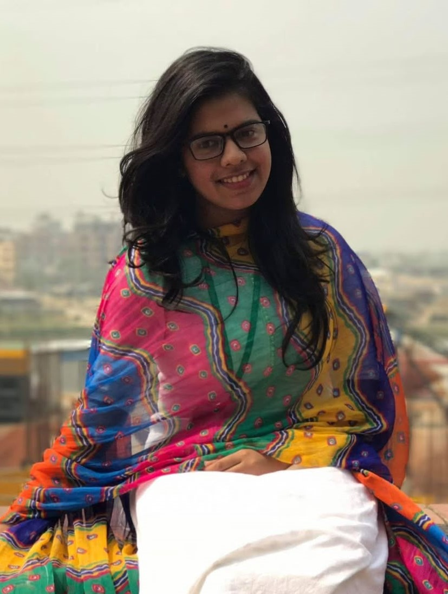

Explainable OCT Biomarker Detection
Exploring explainable approaches for detecting and interpreting retinal biomarkers in optical coherence tomography (OCT) images, using the OLIVES dataset.
ACADEMIC PORTFOLIO
Primeasia University · Bangladesh
Exploring how artificial intelligence and machine learning can contribute to accessible, reliable healthcare through medical image analysis.

ABOUT
I am a Lecturer in the Department of Computer Science and Engineering at Primeasia University, Bangladesh. My academic interests include machine learning, artificial intelligence, computer vision, and medical image analysis.
My research motivation is to explore practical AI-driven approaches that may support earlier detection and more accessible healthcare, particularly in resource-constrained settings.
RESEARCH
My work focuses on applying computational methods to clinically relevant problems.
Exploring explainable approaches for detecting and interpreting retinal biomarkers in optical coherence tomography (OCT) images, using the OLIVES dataset.
Investigating multimodal learning approaches that combine retinal images and tabular clinical information for retinal disease analysis.
Interested in machine learning and computer vision methods that could support screening, early risk identification, and healthcare access in underserved communities.
Project descriptions on this page are brief research summaries. Add links to code, datasets, preprints, or publications when they are ready to share.
RESEARCH OUTPUT
My research contributions in machine learning, computer vision, medical image analysis, and assistive technologies.
Ghosh Poly Rani, Maria Afnan, and Joy Biswas.
Journal of Primeasia, 4(1), 1–6.
Tasneem Zareen, Maria Afnan, Md Arman Hossain, Md Mahbubur Rahman, and Samrat Kumar Dey.
International Journal of Information and Computer Security, 21(3–4), 414–435, 2023.
Tasneem Zareen, Maria Afnan, Firoz Hasan, and Nusrat Sharmin.
2022 IEEE International Women in Engineering (WIE) Conference on Electrical and Computer Engineering (WIECON-ECE), pp. 72–77, IEEE, 2022.
Maria Afnan, Zareen Tasneem, Sheikh Tasfia, Anusha Aziz, and Muhammad Nazrul Islam.
2022 25th International Conference on Computer and Information Technology (ICCIT), pp. 224–229, IEEE, 2022.
Toma Mohoshina Akter, Nuzhat Tabassum Promi, Maria Afnan, and Md Hasanul Kabir.
2022 25th International Conference on Computer and Information Technology (ICCIT), pp. 200–205, IEEE, 2022.
Islam Muhammad Nazrul, Nuzhat Tabassum Promi, Jannatul Maowa Shaila, Mohoshina Akter Toma, Maria Afnan, Fatema Binte Alam, Syeda Nusraht Khaledur, Tasmiah Tamzid Anannya, and Md Fazle Rabbi.
Proceedings of the 16th International Conference on Advances in Mobile Computing and Multimedia, pp. 76–83, 2018.
EXPERIENCE
Department of Computer Science and Engineering · Primeasia University, Bangladesh
Teaching and supporting undergraduate learning in computer science and engineering. Academic interests include machine learning, programming, and applied AI.
EDUCATION
Military Institute of Science and Technology (MIST), Bangladesh
RESEARCH INTERESTS
CONTACT
For academic collaboration, research discussions, or professional inquiries, feel free to get in touch.